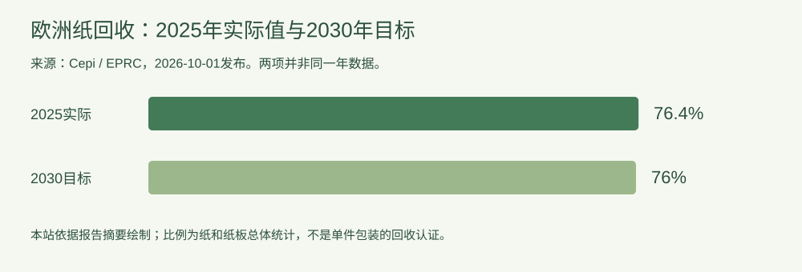

行业动态
新报告读图：欧洲2025年纸回收率76.4%，怎样理解？
2026-10-11 · 印个泡泡
解读10月1日发布的纸回收报告，区分地区总体数据与单件包装表现。
**事件日期：2026年10月1日。**Cepi发布欧洲纸回收委员会（EPRC）2025年监测报告入口。本站于2026年10月11日解读，统计年份为2025，不把发布日期与数据年份混在一起。

图：依据Cepi报告摘要绘制。实际值和目标值分属不同年份，不能把图当作逐年趋势。
摘要表示，2025年欧洲消费的纸和纸板中有76.4%被回收；欧洲纸回收宣言2021—2030的签署方目标为2030年达到76%。从这两个数字可以看出，2025年该总体指标已高于所列目标。
三种不宜直接推出的结论
- 不能推出任何纸盒都已达到同一比例。 地区总体统计不是单个材料、品牌或产品的测试结果。
- 不能替代回收设计判断。 包装的组件组合及实际收集处理条件，需要另行确认。
- 不能套用到中国或其他市场。 此处按报告的欧洲统计口径理解，不把它转换成全球或国内数据。
编辑分析：对品牌而言，这份报告可以作为理解纸回收行业的背景资料。具体包装方案仍应记录材料组成、用途和销售地区的处理条件，避免只引用一个百分比来宣传单件产品。
来源：Cepi / EPRC 2025年监测报告发布页，发布2026-10-01；访问2026-10-11。本文采用摘要中的指标，不自行补充未核实的材料分项数字。
为你的产品，找到适合的包装。
选包装，获取报价 →